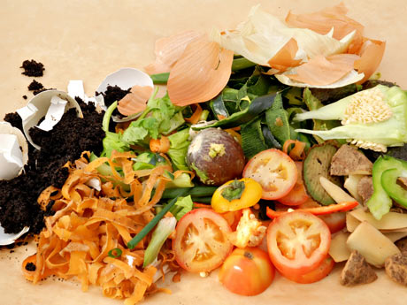

Descarte correto de residuos
Descarte e reciclagem de Orgânico
Reciclagem do Orgânico
A reciclagem de resíduos orgânicos, como restos de comida e resíduos de jardim, é uma prática importante para reduzir a quantidade de resíduos enviados para aterros sanitários e mitigar os impactos ambientais da decomposição anaeróbica. Ao compostar resíduos orgânicos, podemos produzir composto orgânico rico em nutrientes, que pode ser utilizado para fertilizar solos e promover a saúde das plantas. Além disso, a compostagem de resíduos orgânicos ajuda a reduzir as emissões de gases de efeito estufa, como o metano, contribuindo para a luta contra as mudanças climáticas
A importância da reciclagem do Orgânico
- Melhora a qualidade do solo, aumentando sua fertilidade e capacidade de retenção de água.
- Reduz a produção de lixiviados tóxicos em aterros sanitários, que podem contaminar o solo e as águas subterrâneas.
- Oferece uma solução sustentável para o gerenciamento de resíduos em áreas urbanas densamente povoadas, onde o espaço para aterros sanitários é limitado.
- Produz composto orgânico, um fertilizante natural rico em nutrientes.
- Ajuda a promover a sustentabilidade agrícola ao fechar o ciclo de nutrientes.
Como descartar Orgânico corretamente
Os resíduos orgânicos podem ser compostados em casa ou entregues a programas de compostagem da comunidade, se disponíveis. Ao compostar, é importante separar os resíduos orgânicos dos materiais não compostáveis, como plástico e metal. Os resíduos orgânicos, como restos de frutas, vegetais, cascas de ovos e aparas de grama, podem ser transformados em composto orgânico rico em nutrientes, que pode ser utilizado para fertilizar jardins e plantações. Certifique-se de seguir as instruções específicas para compostagem e evitar adicionar materiais não compostáveis ao composto.